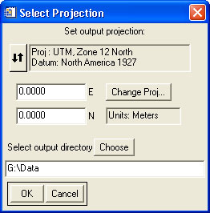

Using "Add Projection to LAS File(s)"

Usage:
This tool is meant to add embedded projection information to LAS files that are missing it. (To actually reproject the data, use the reprojection tool.)
- Select the input file(s).
- Set the desired projection.
- Select the output directory. Each output file will be saved with the same name as the corresponding input file.
Back to LidarTools home page.
Notes:
- This tool requires data that are in the LAS format.
Comments?
• Idaho State University • Boise Center Aerospace Laboratory • 322 E. Front Street #240 • Boise, Idaho • 83702 •